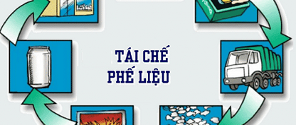
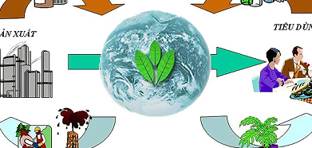
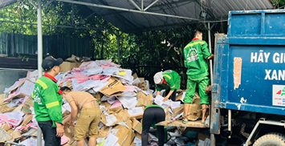
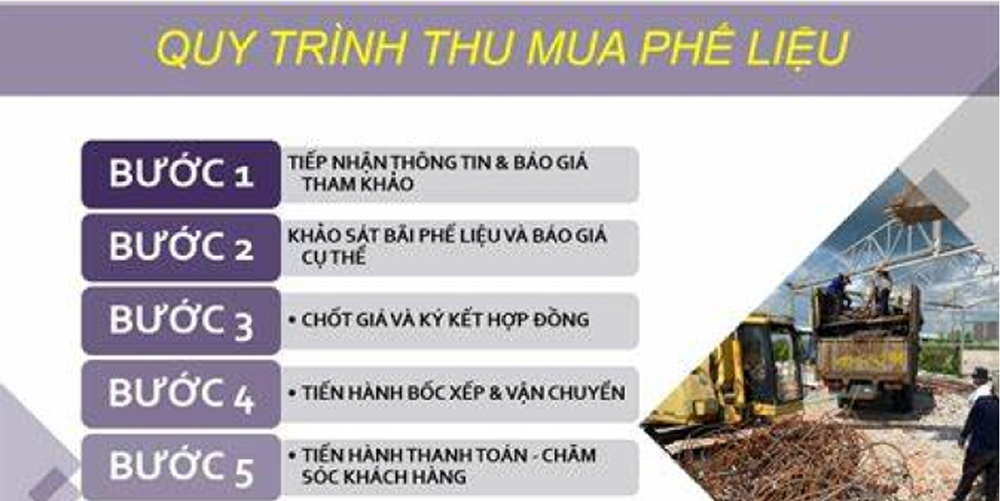
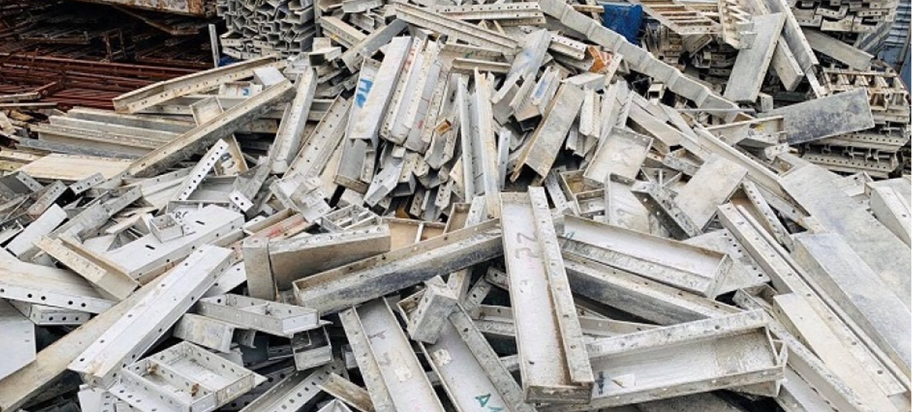
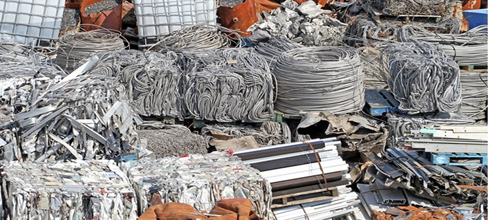

2. Purpose and Benefits
2.1 Resource Recycling
Recycling scrap materials is a crucial solution for conserving raw materials and reducing the extraction of natural
resources. By reprocessing and reusing used materials, industries can minimize their dependence on primary sources such
as metal ores, wood, and petroleum. For instance, recycling scrap aluminum requires only about 5% of the energy needed
to produce aluminum from bauxite ore, making it highly energy-efficient. Similarly, recycling one ton of paper can save
approximately 17 mature trees, significantly reducing deforestation. The clear benefits of recycling include a reduction
in the extraction of minerals, wood, and fossil fuels, decreased energy consumption in raw material production, and the
preservation of valuable natural resources for future generations.
2.2 Environmental Protection
Recycling also plays a vital role in protecting the environment by limiting waste generation and reducing greenhouse gas
emissions and pollution. When scrap materials are not properly collected and processed, they can end up in landfills or
the environment, leading to soil, water, and air contamination. Toxic substances found in batteries, electronic
components, and plastics can persist in the environment for hundreds of years. Recycling helps reduce the volume of
landfill waste, conserves landfill space, and prevents the release of harmful emissions from waste incineration, such as
dioxins and furans. It also minimizes greenhouse gas emissions like CO₂ and CH₄ associated with new production processes
and reduces water pollution caused by leachate from landfills. For example, recycling one ton of aluminum can cut down
approximately 9 tons of CO₂ emissions, significantly benefiting the environment.
2.3 Economic Value Creation
Scrap material purchasing and recycling contribute significantly to economic value creation by offering profit
opportunities for both individuals and businesses. Households can sell used items and scrap materials to generate
additional income, while businesses can reduce storage costs by disposing of excess inventory and obsolete machinery.
Recycling companies purchase these materials and reintroduce them into the production cycle, forming a circular economy.
Governments also benefit from reduced waste management costs and decreased reliance on imported raw materials. As an
example, a scrap purchasing company that recycles hundreds of tons of copper and aluminum annually can earn millions in
revenue by selling these materials back to manufacturers.
2.4 Contributing to the Development of the Recycling Industry
The recycling of scrap materials plays a key role in supplying raw materials for manufacturing plants, fostering the
growth of a sustainable and circular economy. Recycled metals such as copper, iron, steel, and aluminum are widely used
in the production of components, machinery, and construction materials. Recycled plastics serve as inputs for packaging,
furniture, and construction products, while recycled paper is repurposed for printing, packaging, and office supplies.
This process not only supports industrial production but also has broad social and economic impacts. It creates millions
of jobs in the collection, sorting, processing, and recycling sectors, drives the development of environmentally
friendly industries, and stimulates technological innovation and production efficiency.

Image 1
The Process of Processing and Recycling into New Raw Materials

Image 2
Recycling Production Process and Creating Economic Value from the Environment

Image 3
Waste Collection Trucks of the Company
3. 🛠️ Professional Scrap Buying Process
Customers can reach us through phone, our website, or by visiting us in person. Once contacted, our staff will visit the
site to conduct a thorough survey and provide a fair quotation for the scrap materials. We then arrange for collection
and transportation using specialized trucks, with a team of loaders available to assist in dismantling if necessary. To
ensure convenience, we offer quick and flexible payment options, either in cash or via bank transfer, and provide
invoices upon request. All collected scrap materials are brought to our warehouse or workshop, where they are carefully
sorted and processed to ensure proper recycling in accordance with environmental standards.

Image 2
Scrap Material Purchasing with Company Vehicles
Target Audience and Collection Locations
We offer a comprehensive waste collection and processing service for individuals and households, ensuring the proper
disposal and recycling of various types of waste. Our services include the management of specially classified household
waste, which includes items that require careful handling. These items are: old fluorescent bulbs, used small batteries
and accumulators, used oils and fats (if any), and used cleaning agents or chemicals. Such materials need to be disposed
of properly to avoid environmental damage and potential health risks.
In addition to specially classified waste, we also collect recyclable scrap materials from households. These materials
can either be bought from households or accepted for free, depending on their condition. Recyclable items include scrap
paper, old newspapers, PET plastics, plastic cans, plastic boxes, aluminum cans, steel, and other old metal materials.
These materials are important for reducing waste sent to landfills and can be processed and reused in various
industries, promoting sustainability.
We also handle the collection of broken household electronic devices, which include items such as fans, old computers,
televisions, refrigerators, and other household appliances. These electronic devices are often difficult to dispose of
and may contain hazardous components. We ensure that these items are properly dismantled, sorted, and sent to
specialized facilities for recycling or disposal, following environmental guidelines. Our goal is to make waste
management easier for households while contributing to a cleaner and greenerenvironment.

Image 2
Scrap Material Purchasing with Company Vehicles
We purchase various types of scrap materials from companies, factories, and
production workshops. Our buying process
includes collecting old and broken machinery, equipment that is no longer operational, or items that have become
obsolete. We also acquire production waste such as surplus or leftover materials including iron, steel, aluminum,
copper, plastic, scrap paper, wood, and more. Additionally, we accept used pallets, packaging materials, and
cardboard
boxes. Our services extend to a wide range of locations, including industrial zones, export processing zones,
warehouses, production workshops, and construction sites.

Image 2
Scrap Material Purchasing with Company Vehicles